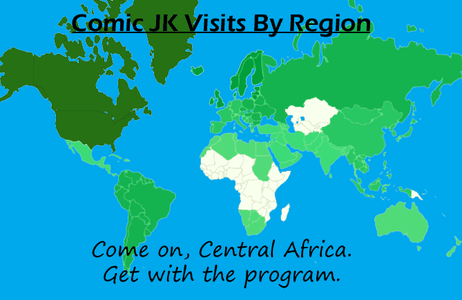

Comic JK 114
When I Feel Like It
⇤
<
?
>
⇥

⇤
<
?
>
⇥
Forum
.
RSS
.
Digg
.
Facebook
.
Reddit
.
Twitter
.
Stumbleupon
Have they just got nothing better to do in Greenland? What about that little thing above Australia? Your mother accesses your shitty comic from the bedrooms of dorky college boys. <I quote: "do you want me to send you back from where you came from? Unemployed, in Greenland?!" The little thing is Papua New Guinea, and believe me, they'll be getting an email too.> Why is the UK apparently bigger than France? I've always thought that the stretching thing was just an excuse, and really Britain has Short Man Syndrome, except in country form... >Yes, but we execute it in style ;) <It's a Mercator projection, which is the most popular because lines of latitude and longitude still work on it despite its being flat. The effect is to stretch countries closer to the poles, like Britain, and shrink ones closer to the equator. Greenland benefits from this the most--it looks as big as Africa, but is actually much, much smaller.> Damn Madagascar! First they close their ports, now this? ^Pandemic reference ftw. Maybe if the president would just read the comic, he'd stop wasting his time closing ports. We should assassinate him. now. but some say that would be... impossible. Wait, why does Slovakia have its western and eastern sides in blue colour? I'm drowning!!nkj,nj,jm,,j,n is there a key? What does forest green mean? >hurp durp I'm pretty sure darker means "more" Africa - what an asshole. Put a black hat on Africa and call it a day. - ezziey What about kazahkstan, kyrkystan, uzbekistan, and turkminestan? (I didnt use a labeled map btw) >and the falkland islands, the borders, american samoa, madagascar, >wouldn't it have been easier just to say "northeastern U-pik-a-stan"?